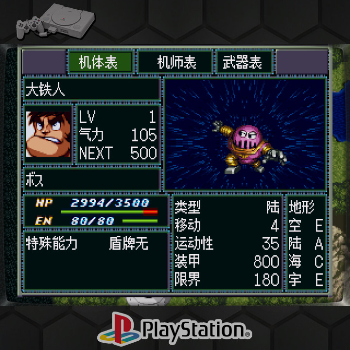
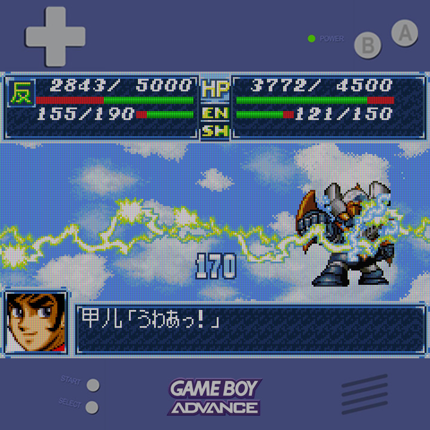
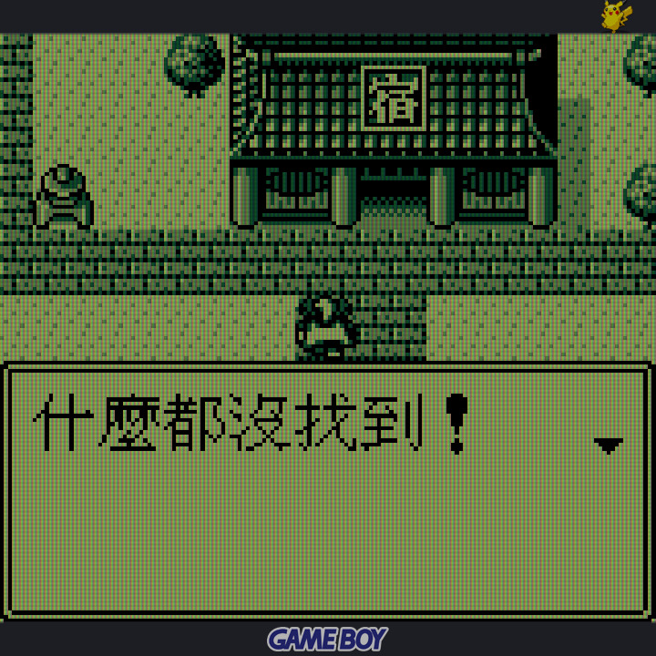
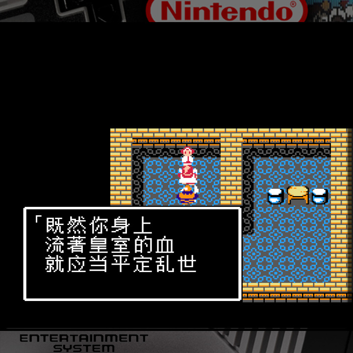
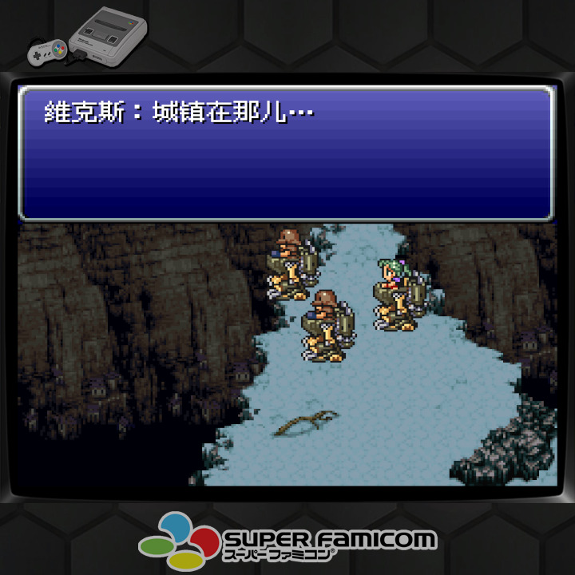
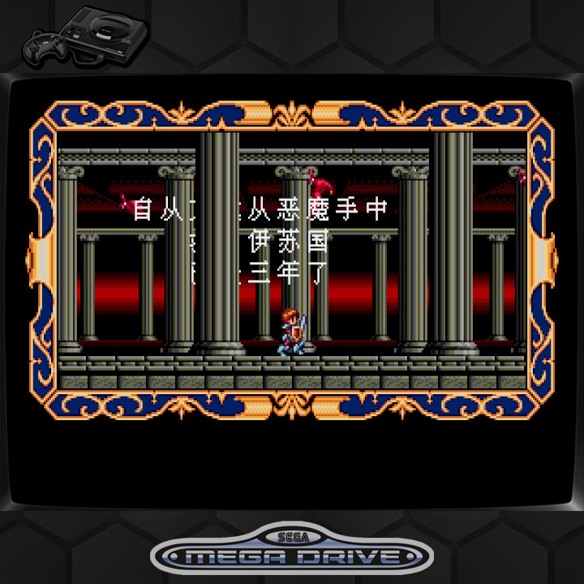
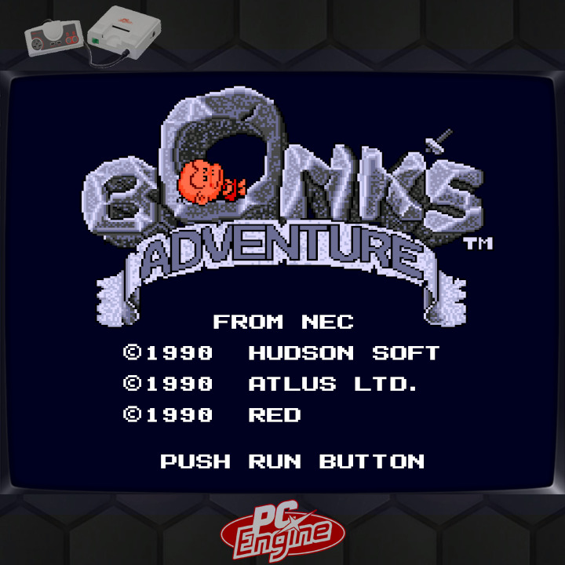
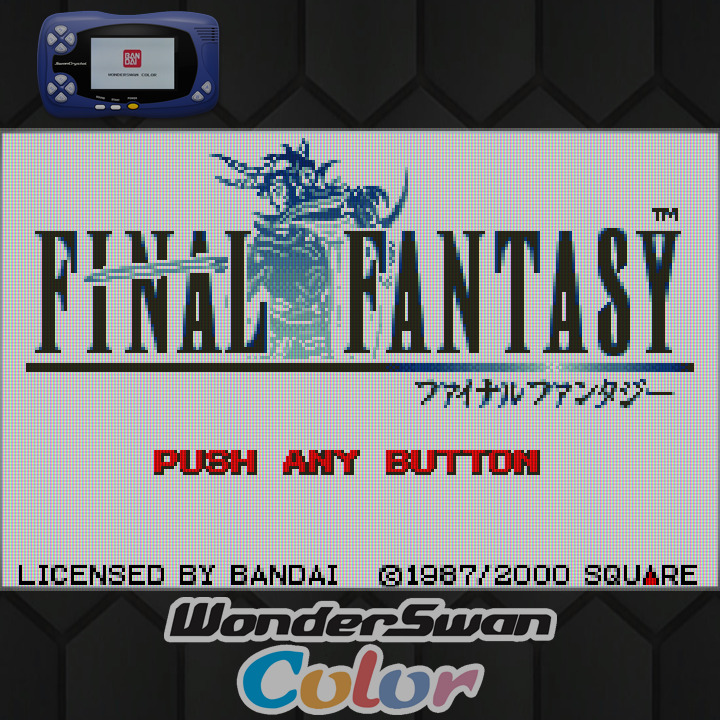

https://github.com/retrogamecorps/RGB30stockoverlays
https://github.com/steward-fu/website/releases/download/q25/font.ttf
字型修正前

字型修正後
參考資訊：
https://github.com/retrogamecorps/RGB30stockoverlays
https://github.com/steward-fu/website/releases/download/q25/font.ttf
字型修正前
字型修正後
/data/data/com.retroarch/assets/glui/font.ttf

PS1
1. Settings => Video => Scaling => Integer Scale => OFF 2. Settings => Video => Scaling => Aspect Ratio => Core provided 3. On-Screen Overlay => Overlay Present => psx/default.cfg 4. On-Screen Overlay => Auto-Scale Overlay => OFF 5. On-Screen Overlay => Auto-Rotate Overlay => OFF 6. Shaders => Load => shaders_glsh => interpolation => pixellate.glslp 7. Shader => Save => Save Core Present 8. Overrides => Save Core Overrides

1. Settings => Video => Scaling => Integer Scale => OFF 2. Settings => Video => Scaling => Aspect Ratio => Core provided 3. On-Screen Overlay => Overlay Present => gba/default.cfg 4. On-Screen Overlay => Auto-Scale Overlay => OFF 5. On-Screen Overlay => Auto-Rotate Overlay => OFF 6. Shaders => Load => shaders_glsh => handheld => lcd3x.glsl 7. Shader => Save => Save Core Present 8. Overrides => Save Core Overrides

1. Settings => Video => Scaling => Integer Scale => OFF 2. Settings => Video => Scaling => Aspect Ratio => Core provided 3. On-Screen Overlay => Overlay Present => gbc/default.cfg 4. On-Screen Overlay => Auto-Scale Overlay => OFF 5. On-Screen Overlay => Auto-Rotate Overlay => OFF 6. Shaders => Load => shaders_glsh => handheld => lcd3x.glsl 7. Shader => Save => Save Core Present 8. Overrides => Save Core Overrides

1. Settings => Video => Scaling => Integer Scale => OFF 2. Settings => Video => Scaling => Aspect Ratio => Core provided 3. On-Screen Overlay => Overlay Present => nes/default.cfg 4. On-Screen Overlay => Auto-Scale Overlay => OFF 5. On-Screen Overlay => Auto-Rotate Overlay => OFF 6. Shaders => Load => shaders_glsh => interpolation => pixellate.glslp 7. Shader => Save => Save Core Present 8. Overrides => Save Core Overrides

1. Settings => Video => Scaling => Integer Scale => OFF 2. Settings => Video => Scaling => Aspect Ratio => Core provided 3. On-Screen Overlay => Overlay Present => snes/default.cfg 4. On-Screen Overlay => Auto-Scale Overlay => OFF 5. On-Screen Overlay => Auto-Rotate Overlay => OFF 6. Shaders => Load => shaders_glsh => interpolation => pixellate.glslp 7. Shader => Save => Save Core Present 8. Overrides => Save Core Overrides

1. Settings => Video => Scaling => Integer Scale => OFF 2. Settings => Video => Scaling => Aspect Ratio => Core provided 3. On-Screen Overlay => Overlay Present => megadrive/default.cfg 4. On-Screen Overlay => Auto-Scale Overlay => OFF 5. On-Screen Overlay => Auto-Rotate Overlay => OFF 6. Shaders => Load => shaders_glsh => interpolation => pixellate.glslp 7. Shader => Save => Save Core Present 8. Overrides => Save Core Overrides

1. Settings => Video => Scaling => Integer Scale => OFF 2. Settings => Video => Scaling => Aspect Ratio => Core provided 3. On-Screen Overlay => Overlay Present => pcengine/default.cfg 4. On-Screen Overlay => Auto-Scale Overlay => OFF 5. On-Screen Overlay => Auto-Rotate Overlay => OFF 6. Shaders => Load => shaders_glsh => interpolation => pixellate.glslp 7. Shader => Save => Save Core Present 8. Overrides => Save Core Overrides

1. Settings => Video => Scaling => Integer Scale => OFF 2. Settings => Video => Scaling => Aspect Ratio => Core provided 3. On-Screen Overlay => Overlay Present => wonderswancolor/default.cfg 4. On-Screen Overlay => Auto-Scale Overlay => OFF 5. On-Screen Overlay => Auto-Rotate Overlay => OFF 6. Shaders => Load => shaders_glsh => handheld => lcd3x.glsl 7. Shader => Save => Save Core Present 8. Overrides => Save Core Overrides
